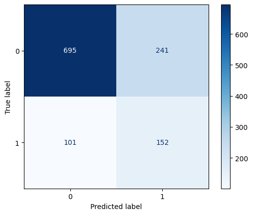
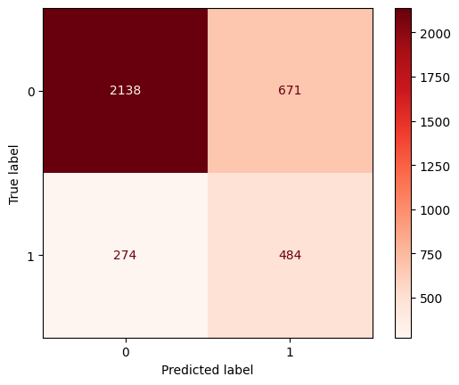

Librerías#
import warnings
import numpy as np
import pandas as pd
import matplotlib.pyplot as plt
warnings.filterwarnings("ignore")
from sklearn.metrics import *
from sklearn.ensemble import *
from sklearn.pipeline import *
from sklearn.preprocessing import *
from sklearn.model_selection import *
from sklearn.feature_selection import *
from sklearn.tree import DecisionTreeClassifier
Data#
df = pd.read_excel("../data/processed/df_to_model_frenel_15102025.xlsx")
df.head()
| target_tfg | pais_encuesta | grupo_origen | pais_nacimiento | edad | genero | grupo_etnico | nivel_escolaridad | regimen_salud | ocupacion | ... | hacinamiento_hogar | hogar_migrantes | grupo_origen_ingles | ocupacion_agricola | imc | clasificacion_imc | grupo_edad | clasificacion_tfg | clasificacion_pa | creatinina_elevada | |
|---|---|---|---|---|---|---|---|---|---|---|---|---|---|---|---|---|---|---|---|---|---|
| 0 | 0 | COLOMBIA | AFRODESCENDIENTE | COLOMBIA | 49 | Femenino | AFRODESCENDIENTE | Primaria | Asegurador público | Comerciante | ... | NO | NO | AFRODESCENDANT | NO | 32.326531 | Obesidad | 41-50 | Ligera (60-89) | Hipertensión grado 2 (moderada) | False |
| 1 | 1 | COLOMBIA | AFRODESCENDIENTE | COLOMBIA | 83 | Femenino | AFRODESCENDIENTE | No escolarizado | Asegurador privado | Desempleado | ... | NO | NO | AFRODESCENDANT | NO | 22.206331 | Normal | 60+ | Leve Moderada (45-59) | Normal-alta | True |
| 2 | 0 | COLOMBIA | AFRODESCENDIENTE | COLOMBIA | 70 | Femenino | AFRODESCENDIENTE | No escolarizado | Asegurador público | Comerciante | ... | SI | NO | AFRODESCENDANT | NO | 20.820940 | Normal | 60+ | Ligera (60-89) | Hipertensión grado 2 (moderada) | False |
| 3 | 0 | COLOMBIA | AFRODESCENDIENTE | COLOMBIA | 25 | Femenino | AFRODESCENDIENTE | Técnica | Asegurador público | Comerciante | ... | NO | NO | AFRODESCENDANT | NO | 23.738662 | Normal | 18-30 | Ligera (60-89) | Normal | True |
| 4 | 1 | COLOMBIA | AFRODESCENDIENTE | COLOMBIA | 64 | Femenino | AFRODESCENDIENTE | Primaria | Asegurador público | Desempleado | ... | NO | NO | AFRODESCENDANT | NO | 19.257029 | Normal | 60+ | Leve Moderada (45-59) | Normal | True |
5 rows × 57 columns
Variables a Excluir#
columnas_a_excluir = ['pais_encuesta', 'grupo_origen', 'pais_nacimiento','edad', 'georeferenciacion', 'presion_arterial_sistolica',
'presion_arterial_diastolica', 'creatinina', 'peso', 'talla', 'grupo_origen_ingles', 'imc', 'clasificacion_tfg',
'tasa_filtracion_glomerular', 'ocupacion', 'creatinina_elevada
']
df.drop(columns=columnas_a_excluir, inplace=True)
Codificación Variables Categóricas#
df_col = df.drop(columns=['target_tfg'])
cat_cols = df_col.select_dtypes(include=['object', 'bool']).columns
num_cols = df_col.select_dtypes(include=['int64', 'float64']).columns
#print("Categorical columns: \n", cat_cols)
#print("Numerical columns: \n", num_cols)
encoder = OneHotEncoder(sparse_output = False) #La salida será una matriz densa (DataFrame de Pandas)
encoded = encoder.fit_transform(df[cat_cols])
df_encoded = pd.DataFrame(encoded, columns = encoder.get_feature_names_out(cat_cols))
df_modelo = pd.concat([df, df_encoded], axis = 1) # axis = 1: Indica que las columnas especificadas deben ser eliminadas
df_modelo = df_modelo.drop(cat_cols, axis = 1)
Conjuntos de Train y Test#
X = df_modelo.drop(columns=['target_tfg'])
y = df_modelo['target_tfg']
X_train, X_test, y_train, y_test = train_test_split(X, y, random_state=11, stratify=y)
print("Train set size:", X_train.shape)
print("Test set size:", X_test.shape)
Train set size: (3567, 108)
Test set size: (1189, 108)
Modelo#
pipeline = make_pipeline(SelectKBest(k=25), DecisionTreeClassifier(class_weight='balanced', random_state=42))
param_grid = {
'decisiontreeclassifier__max_depth': [3, 5, 7, 9, None],
'decisiontreeclassifier__min_samples_split': [2, 5, 10],
'decisiontreeclassifier__min_samples_leaf': [1, 2, 5],
'decisiontreeclassifier__criterion': ['gini', 'entropy']
}
grid_search = GridSearchCV(pipeline, param_grid, cv=5, scoring='recall')
grid_search.fit(X_train, y_train)
print("Mejores parámetros:", grid_search.best_params_)
print("Mejor Recall en Train:", grid_search.best_score_)
print("Mejor Recall en Test:", recall_score(y_test, grid_search.predict(X_test)))
Mejores parámetros: {'decisiontreeclassifier__criterion': 'entropy', 'decisiontreeclassifier__max_depth': 5, 'decisiontreeclassifier__min_samples_leaf': 1, 'decisiontreeclassifier__min_samples_split': 2}
Mejor Recall en Train: 0.6742854653189265
Mejor Recall en Test: 0.6007905138339921
y_pred = grid_search.predict(X_test)
cm = confusion_matrix(y_test, y_pred)
ConfusionMatrixDisplay(cm).plot(cmap='Blues')
<sklearn.metrics._plot.confusion_matrix.ConfusionMatrixDisplay at 0x1fbb54ec790>

y_pred_train = grid_search.predict(X_train)
cm = confusion_matrix(y_train, y_pred_train)
ConfusionMatrixDisplay(cm).plot(cmap='Reds')
<sklearn.metrics._plot.confusion_matrix.ConfusionMatrixDisplay at 0x1fbb33d3250>

# 🔹 Predicciones en TRAIN
y_train_pred = grid_search.predict(X_train)
y_train_prob = grid_search.predict_proba(X_train)[:, 1]
# 🔹 Predicciones en TEST
y_test_pred = grid_search.predict(X_test)
y_test_prob = grid_search.predict_proba(X_test)[:, 1]
# 🔹 Crear tabla comparativa
resultados = {
'Dataset': ['Train', 'Test'],
'Precision': [
precision_score(y_train, y_train_pred),
precision_score(y_test, y_test_pred)
],
'Recall': [
recall_score(y_train, y_train_pred),
recall_score(y_test, y_test_pred)
],
'F1 Score': [
f1_score(y_train, y_train_pred),
f1_score(y_test, y_test_pred)
],
'ROC AUC': [
roc_auc_score(y_train, y_train_prob),
roc_auc_score(y_test, y_test_prob)
]
}
metricas_tree = pd.DataFrame(resultados)
metricas_tree
| Dataset | Precision | Recall | F1 Score | ROC AUC | |
|---|---|---|---|---|---|
| 0 | Train | 0.419048 | 0.638522 | 0.506012 | 0.769266 |
| 1 | Test | 0.386768 | 0.600791 | 0.470588 | 0.717837 |
def plot_feature_importances_cancer(model):
n_features = df.data.shape[1]
plt.barh(range(n_features), model.feature_importances_, align='center')
plt.yticks(np.arange(n_features), df.feature_names)
plt.xlabel("Feature importance")
plt.ylabel("Feature")
plot_feature_importances_cancer(grid_search)
---------------------------------------------------------------------------
AttributeError Traceback (most recent call last)
~\AppData\Local\Temp\ipykernel_33696\3547921828.py in ?()
----> 1 plot_feature_importances_cancer(grid_search)
~\AppData\Local\Temp\ipykernel_33696\2246205427.py in ?(model)
1 def plot_feature_importances_cancer(model):
----> 2 n_features = df.data.shape[1]
3 plt.barh(range(n_features), model.feature_importances_, align='center')
4 plt.yticks(np.arange(n_features), df.feature_names)
5 plt.xlabel("Feature importance")
c:\Users\CCOSTA397\miniconda3\envs\frenel\Lib\site-packages\pandas\core\generic.py in ?(self, name)
6314 and name not in self._accessors
6315 and self._info_axis._can_hold_identifiers_and_holds_name(name)
6316 ):
6317 return self[name]
-> 6318 return object.__getattribute__(self, name)
AttributeError: 'DataFrame' object has no attribute 'data'